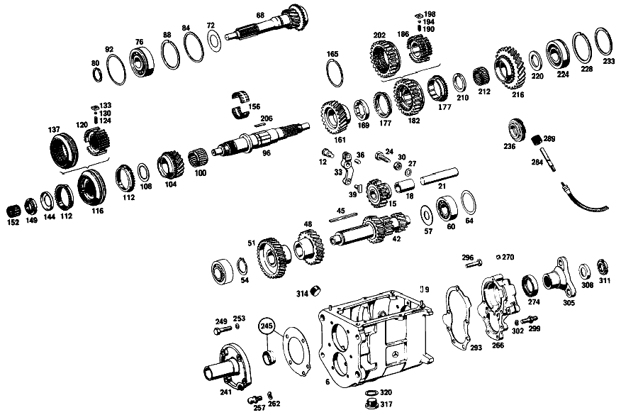

| № | Артикул | Название | Кол. | Примечание | Ограничение |
|---|---|---|---|---|---|
| 6 | A 111 260 02 11 | КОРПУС КП | - | Рулевое управление: ВлевоКоробка передач [022] UP TO TRANSMISSION 012966 | |
| 9 | N 000007 006205 | - Цилиндрический штифт | 2 | Рулевое управление: ВлевоКоробка передач [024] 024/025 UP TO CHASSIS 002863 EXCEPT FOR, SEE FOOTNOTE 28 [028] 002123, 002193, 002327, 002402, 002539, 002546, 002726, 002731, 002744, 002748, 002757, 002760, 002763, 002797, 002862. | |
| 12 | A 111 262 00 74 | - Палец | 1 | Рулевое управление: ВлевоКоробка передач [024] 024/025 UP TO CHASSIS 002863 EXCEPT FOR, SEE FOOTNOTE 28 [028] 002123, 002193, 002327, 002402, 002539, 002546, 002726, 002731, 002744, 002748, 002757, 002760, 002763, 002797, 002862. | |
| 15 | A 120 260 03 25 | Шестерня заднего хода | 1 | Рулевое управление: ВлевоКоробка передач [024] 024/025 UP TO CHASSIS 002863 EXCEPT FOR, SEE FOOTNOTE 28 [028] 002123, 002193, 002327, 002402, 002539, 002546, 002726, 002731, 002744, 002748, 002757, 002760, 002763, 002797, 002862. | |
| 18 | A 120 263 03 50 | - втулка | 1 | Рулевое управление: ВлевоКоробка передач [024] 024/025 UP TO CHASSIS 002863 EXCEPT FOR, SEE FOOTNOTE 28 [028] 002123, 002193, 002327, 002402, 002539, 002546, 002726, 002731, 002744, 002748, 002757, 002760, 002763, 002797, 002862. | |
| 21 | A 186 263 00 30 | Ось шестерни заднего хода | 1 | Рулевое управление: ВлевоКоробка передач [024] 024/025 UP TO CHASSIS 002863 EXCEPT FOR, SEE FOOTNOTE 28 [028] 002123, 002193, 002327, 002402, 002539, 002546, 002726, 002731, 002744, 002748, 002757, 002760, 002763, 002797, 002862. | |
| 24 | A 110 990 01 10 | БОЛТ | 1 | Рулевое управление: ВлевоКоробка передач [024] 024/025 UP TO CHASSIS 002863 EXCEPT FOR, SEE FOOTNOTE 28 [028] 002123, 002193, 002327, 002402, 002539, 002546, 002726, 002731, 002744, 002748, 002757, 002760, 002763, 002797, 002862. | |
| 27 | N 000137 010201 | Пружинная шайба | 1 | Рулевое управление: ВлевоКоробка передач [024] 024/025 UP TO CHASSIS 002863 EXCEPT FOR, SEE FOOTNOTE 28 [028] 002123, 002193, 002327, 002402, 002539, 002546, 002726, 002731, 002744, 002748, 002757, 002760, 002763, 002797, 002862. | |
| 30 | N 000934 010005 | Гайка | 1 | Рулевое управление: ВлевоКоробка передач [024] 024/025 UP TO CHASSIS 002863 EXCEPT FOR, SEE FOOTNOTE 28 [028] 002123, 002193, 002327, 002402, 002539, 002546, 002726, 002731, 002744, 002748, 002757, 002760, 002763, 002797, 002862. | |
| 33 | A 136 260 00 37 | РЫЧАГ | 1 | ПЕРЕДАЧА ЗАДНЕГО ХОДА Рулевое управление: ВлевоКоробка передач [024] 024/025 UP TO CHASSIS 002863 EXCEPT FOR, SEE FOOTNOTE 28 [028] 002123, 002193, 002327, 002402, 002539, 002546, 002726, 002731, 002744, 002748, 002757, 002760, 002763, 002797, 002862. | |
| 36 | N 900037 008104 | - Установочный штифт | 1 | Рулевое управление: ВлевоКоробка передач [024] 024/025 UP TO CHASSIS 002863 EXCEPT FOR, SEE FOOTNOTE 28 [028] 002123, 002193, 002327, 002402, 002539, 002546, 002726, 002731, 002744, 002748, 002757, 002760, 002763, 002797, 002862. | |
| 39 | A 121 263 01 23 | Скользящая муфта | 1 | ШЕСТЕРНЯ ОБРАТНОГО ХОДА Рулевое управление: ВлевоКоробка передач [024] 024/025 UP TO CHASSIS 002863 EXCEPT FOR, SEE FOOTNOTE 28 [028] 002123, 002193, 002327, 002402, 002539, 002546, 002726, 002731, 002744, 002748, 002757, 002760, 002763, 002797, 002862. | |
| 42 | A 111 263 05 02 | ПРОМЕЖУТОЧНЫЙ ВАЛ | 1 | Рулевое управление: ВлевоКоробка передач [026] FROM TRANSMISSION 021078 | |
| 45 | A 186 991 03 68 | Призматическая шпонка | 1 | Рулевое управление: ВлевоКоробка передач [024] 024/025 UP TO CHASSIS 002863 EXCEPT FOR, SEE FOOTNOTE 28 [028] 002123, 002193, 002327, 002402, 002539, 002546, 002726, 002731, 002744, 002748, 002757, 002760, 002763, 002797, 002862. | |
| 48 | A 111 263 00 13 | Шестерня | 1 | 38 TEETH; 3RD SPEED Рулевое управление: ВлевоКоробка передач [024] 024/025 UP TO CHASSIS 002863 EXCEPT FOR, SEE FOOTNOTE 28 [028] 002123, 002193, 002327, 002402, 002539, 002546, 002726, 002731, 002744, 002748, 002757, 002760, 002763, 002797, 002862. | |
| 51 | A 111 263 00 10 | Шестерня | 1 | 43 TEETH, 4TH SPEED Рулевое управление: ВлевоКоробка передач [024] 024/025 UP TO CHASSIS 002863 EXCEPT FOR, SEE FOOTNOTE 28 [028] 002123, 002193, 002327, 002402, 002539, 002546, 002726, 002731, 002744, 002748, 002757, 002760, 002763, 002797, 002862. | |
| 54 | N 900055 035300 | Стопорное кольцо | 1 | Рулевое управление: ВлевоКоробка передач [402] БОЛЬШЕ НЕ ПОСТАВЛЯЕТСЯ [024] 024/025 UP TO CHASSIS 002863 EXCEPT FOR, SEE FOOTNOTE 28 [028] 002123, 002193, 002327, 002402, 002539, 002546, 002726, 002731, 002744, 002748, 002757, 002760, 002763, 002797, 002862. | |
| 57 | A 186 990 18 40 | Диск | 1 | Рулевое управление: ВлевоКоробка передач [024] 024/025 UP TO CHASSIS 002863 EXCEPT FOR, SEE FOOTNOTE 28 [028] 002123, 002193, 002327, 002402, 002539, 002546, 002726, 002731, 002744, 002748, 002757, 002760, 002763, 002797, 002862. | |
| 60 | A 001 981 71 25 | ШАРИКОПОДШИПНИК | - | Рулевое управление: ВлевоКоробка передач | |
| 60 | A 004 981 42 01 | Подшипник с цил. роликами | 2 | Рулевое управление: ВлевоКоробка передач [024] 024/025 UP TO CHASSIS 002863 EXCEPT FOR, SEE FOOTNOTE 28 [028] 002123, 002193, 002327, 002402, 002539, 002546, 002726, 002731, 002744, 002748, 002757, 002760, 002763, 002797, 002862. | |
| 64 | A 120 263 08 52 | Компенсационная шайба | NB | ПО НЕОБХОДИМОСТИ 1.0 MM Рулевое управление: ВлевоКоробка передач [024] 024/025 UP TO CHASSIS 002863 EXCEPT FOR, SEE FOOTNOTE 28 [028] 002123, 002193, 002327, 002402, 002539, 002546, 002726, 002731, 002744, 002748, 002757, 002760, 002763, 002797, 002862. | |
| 68 | A 111 260 13 20 | Приводной вал | 1 | Рулевое управление: ВлевоКоробка передач [024] 024/025 UP TO CHASSIS 002863 EXCEPT FOR, SEE FOOTNOTE 28 [028] 002123, 002193, 002327, 002402, 002539, 002546, 002726, 002731, 002744, 002748, 002757, 002760, 002763, 002797, 002862. | |
| 72 | A 186 262 00 66 | Маслозащитное кольцо | 1 | Рулевое управление: ВлевоКоробка передач [024] 024/025 UP TO CHASSIS 002863 EXCEPT FOR, SEE FOOTNOTE 28 [028] 002123, 002193, 002327, 002402, 002539, 002546, 002726, 002731, 002744, 002748, 002757, 002760, 002763, 002797, 002862. | |
| 76 | A 002 981 06 25 | ШАРИКОПОДШИПНИК | 1 | Рулевое управление: ВлевоКоробка передач [024] 024/025 UP TO CHASSIS 002863 EXCEPT FOR, SEE FOOTNOTE 28 [028] 002123, 002193, 002327, 002402, 002539, 002546, 002726, 002731, 002744, 002748, 002757, 002760, 002763, 002797, 002862. | |
| 76 | A 002 981 07 25 | Рад. шарикоподшипник | 1 | Рулевое управление: ВлевоКоробка передач [024] 024/025 UP TO CHASSIS 002863 EXCEPT FOR, SEE FOOTNOTE 28 [028] 002123, 002193, 002327, 002402, 002539, 002546, 002726, 002731, 002744, 002748, 002757, 002760, 002763, 002797, 002862. | |
| 80 | A 123 262 04 94 | Пруж. стопорное кольцо | 1 | Рулевое управление: ВлевоКоробка передач [024] 024/025 UP TO CHASSIS 002863 EXCEPT FOR, SEE FOOTNOTE 28 [028] 002123, 002193, 002327, 002402, 002539, 002546, 002726, 002731, 002744, 002748, 002757, 002760, 002763, 002797, 002862. | |
| 84 | A 186 262 04 51 | Проставочное кольцо | 1 | Рулевое управление: ВлевоКоробка передач [024] 024/025 UP TO CHASSIS 002863 EXCEPT FOR, SEE FOOTNOTE 28 [028] 002123, 002193, 002327, 002402, 002539, 002546, 002726, 002731, 002744, 002748, 002757, 002760, 002763, 002797, 002862. | |
| 88 | A 136 994 06 35 | Пруж. стопорное кольцо | 1 | ПО НЕОБХОДИМОСТИ 1.9 MM Рулевое управление: ВлевоКоробка передач [024] 024/025 UP TO CHASSIS 002863 EXCEPT FOR, SEE FOOTNOTE 28 [028] 002123, 002193, 002327, 002402, 002539, 002546, 002726, 002731, 002744, 002748, 002757, 002760, 002763, 002797, 002862. | |
| 92 | A 136 262 06 52 | Компенсационная шайба | NB | ПО НЕОБХОДИМОСТИ 0.1 MM Рулевое управление: ВлевоКоробка передач [024] 024/025 UP TO CHASSIS 002863 EXCEPT FOR, SEE FOOTNOTE 28 [028] 002123, 002193, 002327, 002402, 002539, 002546, 002726, 002731, 002744, 002748, 002757, 002760, 002763, 002797, 002862. | |
| 96 | A 180 262 01 05 | Вторичный вал | 1 | Рулевое управление: ВлевоКоробка передач [024] 024/025 UP TO CHASSIS 002863 EXCEPT FOR, SEE FOOTNOTE 28 [028] 002123, 002193, 002327, 002402, 002539, 002546, 002726, 002731, 002744, 002748, 002757, 002760, 002763, 002797, 002862. | |
| 100 | A 001 981 68 10 | ПОДШИПНИК ИГОЛЬЧАТЫЙ | 1 | ШЕСТЕРНЯ ТРЕТЬЕЙ ПЕРЕДАЧИ Рулевое управление: ВлевоКоробка передач [024] 024/025 UP TO CHASSIS 002863 EXCEPT FOR, SEE FOOTNOTE 28 [028] 002123, 002193, 002327, 002402, 002539, 002546, 002726, 002731, 002744, 002748, 002757, 002760, 002763, 002797, 002862. | |
| 104 | A 111 260 03 44 | Цил. косозубая шестерня | 1 | с SYNCHRONIZING CONE 31 TEETH Рулевое управление: ВлевоКоробка передач | |
| 108 | A 120 262 23 62 | Упорная шайба | 1 | ШЕСТЕРНЯ ТРЕТЬЕЙ ПЕРЕДАЧИ Рулевое управление: ВлевоКоробка передач [024] 024/025 UP TO CHASSIS 002863 EXCEPT FOR, SEE FOOTNOTE 28 [028] 002123, 002193, 002327, 002402, 002539, 002546, 002726, 002731, 002744, 002748, 002757, 002760, 002763, 002797, 002862. | |
| 112 | A 113 262 00 34 | Кольцо синхронизатора | 1 | ТРЕТЬЯ И ЧЕТВЁРТАЯ ПЕРЕДАЧА Рулевое управление: ВлевоКоробка передач [024] 024/025 UP TO CHASSIS 002863 EXCEPT FOR, SEE FOOTNOTE 28 [028] 002123, 002193, 002327, 002402, 002539, 002546, 002726, 002731, 002744, 002748, 002757, 002760, 002763, 002797, 002862. | |
| 116 | A 111 260 08 45 | Корпус синхронизатора | 1 | ТРЕТЬЯ И ЧЕТВЁРТАЯ ПЕРЕДАЧА Рулевое управление: ВлевоКоробка передач | |
| 120 | A 111 262 04 35 | - Корпус синхронизатора | - | ТРЕТЬЯ И ЧЕТВЁРТАЯ ПЕРЕДАЧА Рулевое управление: ВлевоКоробка передач [417] БОЛЬШЕ НЕ ПОСТАВЛЯЕТСЯ, ЗАКАЗЫВАТЬ КОМПЛЕКТ ПОСТАВКИ [029] NO LONGER AVAILABLE | |
| 124 | A 180 993 41 01 | - пружина | 3 | Рулевое управление: ВлевоКоробка передач [024] 024/025 UP TO CHASSIS 002863 EXCEPT FOR, SEE FOOTNOTE 28 [028] 002123, 002193, 002327, 002402, 002539, 002546, 002726, 002731, 002744, 002748, 002757, 002760, 002763, 002797, 002862. | |
| 130 | N 005401 306500 | - Шар | 3 | 6.5mm Рулевое управление: ВлевоКоробка передач [024] 024/025 UP TO CHASSIS 002863 EXCEPT FOR, SEE FOOTNOTE 28 [028] 002123, 002193, 002327, 002402, 002539, 002546, 002726, 002731, 002744, 002748, 002757, 002760, 002763, 002797, 002862. | |
| 133 | A 121 262 00 40 | - Поводок | 3 | Рулевое управление: ВлевоКоробка передач [024] 024/025 UP TO CHASSIS 002863 EXCEPT FOR, SEE FOOTNOTE 28 [028] 002123, 002193, 002327, 002402, 002539, 002546, 002726, 002731, 002744, 002748, 002757, 002760, 002763, 002797, 002862. | |
| 137 | A 111 262 04 23 | - СКОЛЬЗ. МУФТА СИНХРОНИЗ. | - | ТРЕТЬЯ И ЧЕТВЁРТАЯ ПЕРЕДАЧА Рулевое управление: ВлевоКоробка передач | |
| 144 | A 120 994 01 15 | Стопорная шайба | 1 | ПО НЕОБХОДИМОСТИ 3.8 MM Рулевое управление: ВлевоКоробка передач [024] 024/025 UP TO CHASSIS 002863 EXCEPT FOR, SEE FOOTNOTE 28 [028] 002123, 002193, 002327, 002402, 002539, 002546, 002726, 002731, 002744, 002748, 002757, 002760, 002763, 002797, 002862. | |
| 149 | A 120 262 03 26 | Шлицевая гайка | 1 | Рулевое управление: ВлевоКоробка передач [024] 024/025 UP TO CHASSIS 002863 EXCEPT FOR, SEE FOOTNOTE 28 [028] 002123, 002193, 002327, 002402, 002539, 002546, 002726, 002731, 002744, 002748, 002757, 002760, 002763, 002797, 002862. | |
| 152 | A 000 981 63 12 | СЕПАРАТОР ИГОЛЬЧ. ПОДШ. | - | Рулевое управление: ВлевоКоробка передач | |
| 152 | A 002 981 34 12 | Сепаратор роликоподш. | 1 | Рулевое управление: ВлевоКоробка передач [024] 024/025 UP TO CHASSIS 002863 EXCEPT FOR, SEE FOOTNOTE 28 [028] 002123, 002193, 002327, 002402, 002539, 002546, 002726, 002731, 002744, 002748, 002757, 002760, 002763, 002797, 002862. | |
| 156 | A 120 981 03 12 | Сепаратор роликоподш. | 1 | РАЗДЕЛЬН. Рулевое управление: ВлевоКоробка передач [024] 024/025 UP TO CHASSIS 002863 EXCEPT FOR, SEE FOOTNOTE 28 [028] 002123, 002193, 002327, 002402, 002539, 002546, 002726, 002731, 002744, 002748, 002757, 002760, 002763, 002797, 002862. | |
| 161 | A 110 260 01 19 | Цил. косозубая шестерня | 1 | 35 TEETH Рулевое управление: ВлевоКоробка передач [024] 024/025 UP TO CHASSIS 002863 EXCEPT FOR, SEE FOOTNOTE 28 [028] 002123, 002193, 002327, 002402, 002539, 002546, 002726, 002731, 002744, 002748, 002757, 002760, 002763, 002797, 002862. | |
| 165 | N 005417 065000 | - Пруж. стопорное кольцо | 1 | Рулевое управление: ВлевоКоробка передач [024] 024/025 UP TO CHASSIS 002863 EXCEPT FOR, SEE FOOTNOTE 28 [028] 002123, 002193, 002327, 002402, 002539, 002546, 002726, 002731, 002744, 002748, 002757, 002760, 002763, 002797, 002862. | |
| 169 | A 120 262 16 62 | ШАЙБА УПОРНАЯ | 1 | ПО НЕОБХОДИМОСТИ 7.9 MM Рулевое управление: ВлевоКоробка передач [024] 024/025 UP TO CHASSIS 002863 EXCEPT FOR, SEE FOOTNOTE 28 [028] 002123, 002193, 002327, 002402, 002539, 002546, 002726, 002731, 002744, 002748, 002757, 002760, 002763, 002797, 002862. | |
| 177 | A 113 262 00 34 | Кольцо синхронизатора | 2 | ПЕРВАЯ И ВТОРАЯ ПЕРЕДАЧА Рулевое управление: ВлевоКоробка передач [024] 024/025 UP TO CHASSIS 002863 EXCEPT FOR, SEE FOOTNOTE 28 [028] 002123, 002193, 002327, 002402, 002539, 002546, 002726, 002731, 002744, 002748, 002757, 002760, 002763, 002797, 002862. | |
| 182 | A 111 260 09 45 | Корпус синхронизатора | 1 | ПЕРВАЯ И ВТОРАЯ ПЕРЕДАЧА Рулевое управление: ВлевоКоробка передач [024] 024/025 UP TO CHASSIS 002863 EXCEPT FOR, SEE FOOTNOTE 28 [028] 002123, 002193, 002327, 002402, 002539, 002546, 002726, 002731, 002744, 002748, 002757, 002760, 002763, 002797, 002862. | |
| 186 | A 111 262 06 35 | - СИНХРОНИЗАТОР | 1 | Рулевое управление: ВлевоКоробка передач [402] БОЛЬШЕ НЕ ПОСТАВЛЯЕТСЯ [024] 024/025 UP TO CHASSIS 002863 EXCEPT FOR, SEE FOOTNOTE 28 [028] 002123, 002193, 002327, 002402, 002539, 002546, 002726, 002731, 002744, 002748, 002757, 002760, 002763, 002797, 002862. | |
| 190 | A 180 993 41 01 | - пружина | 3 | Рулевое управление: ВлевоКоробка передач [024] 024/025 UP TO CHASSIS 002863 EXCEPT FOR, SEE FOOTNOTE 28 [028] 002123, 002193, 002327, 002402, 002539, 002546, 002726, 002731, 002744, 002748, 002757, 002760, 002763, 002797, 002862. | |
| 194 | N 005401 306500 | - Шар | 3 | 6.5mm Рулевое управление: ВлевоКоробка передач [024] 024/025 UP TO CHASSIS 002863 EXCEPT FOR, SEE FOOTNOTE 28 [028] 002123, 002193, 002327, 002402, 002539, 002546, 002726, 002731, 002744, 002748, 002757, 002760, 002763, 002797, 002862. | |
| 198 | A 121 262 00 40 | - Поводок | 3 | Рулевое управление: ВлевоКоробка передач [024] 024/025 UP TO CHASSIS 002863 EXCEPT FOR, SEE FOOTNOTE 28 [028] 002123, 002193, 002327, 002402, 002539, 002546, 002726, 002731, 002744, 002748, 002757, 002760, 002763, 002797, 002862. | |
| 202 | A 111 262 06 23 | - СКОЛЬЗ. МУФТА СИНХРОНИЗ. | 1 | Рулевое управление: ВлевоКоробка передач [402] БОЛЬШЕ НЕ ПОСТАВЛЯЕТСЯ [024] 024/025 UP TO CHASSIS 002863 EXCEPT FOR, SEE FOOTNOTE 28 [028] 002123, 002193, 002327, 002402, 002539, 002546, 002726, 002731, 002744, 002748, 002757, 002760, 002763, 002797, 002862. | |
| 206 | A 120 262 00 81 | Вставной клин | 1 | Рулевое управление: ВлевоКоробка передач [024] 024/025 UP TO CHASSIS 002863 EXCEPT FOR, SEE FOOTNOTE 28 [028] 002123, 002193, 002327, 002402, 002539, 002546, 002726, 002731, 002744, 002748, 002757, 002760, 002763, 002797, 002862. | |
| 210 | A 120 262 11 62 | Упорная шайба | 1 | ПО НЕОБХОДИМОСТИ 4.40 MM Рулевое управление: ВлевоКоробка передач [024] 024/025 UP TO CHASSIS 002863 EXCEPT FOR, SEE FOOTNOTE 28 [028] 002123, 002193, 002327, 002402, 002539, 002546, 002726, 002731, 002744, 002748, 002757, 002760, 002763, 002797, 002862. | |
| 212 | A 001 981 69 10 | Игольчатый подшипник | 1 | 1ST SPEED GEAR Рулевое управление: ВлевоКоробка передач [024] 024/025 UP TO CHASSIS 002863 EXCEPT FOR, SEE FOOTNOTE 28 [028] 002123, 002193, 002327, 002402, 002539, 002546, 002726, 002731, 002744, 002748, 002757, 002760, 002763, 002797, 002862. | |
| 216 | A 110 260 00 19 | Цил. косозубая шестерня | 1 | ПЕРВАЯ ПЕРЕДАЧА Рулевое управление: ВлевоКоробка передач [026] FROM TRANSMISSION 021078 | |
| 220 | A 186 262 01 62 | Упорная шайба | 1 | ПО НЕОБХОДИМОСТИ 3.80 MM Рулевое управление: ВлевоКоробка передач [024] 024/025 UP TO CHASSIS 002863 EXCEPT FOR, SEE FOOTNOTE 28 [028] 002123, 002193, 002327, 002402, 002539, 002546, 002726, 002731, 002744, 002748, 002757, 002760, 002763, 002797, 002862. | |
| 224 | A 002 981 06 25 | ШАРИКОПОДШИПНИК | 1 | Рулевое управление: ВлевоКоробка передач [024] 024/025 UP TO CHASSIS 002863 EXCEPT FOR, SEE FOOTNOTE 28 [028] 002123, 002193, 002327, 002402, 002539, 002546, 002726, 002731, 002744, 002748, 002757, 002760, 002763, 002797, 002862. | |
| 228 | A 000 994 16 40 | СТОПОРН. КОЛЬЦО | 1 | Рулевое управление: ВлевоКоробка передач | |
| 233 | A 136 262 04 52 | Компенсационная шайба | NB | ПО НЕОБХОДИМОСТИ 0.1 MM Рулевое управление: ВлевоКоробка передач | |
| 236 | A 110 264 00 30 | Ведущее колесо | 1 | ПРИВОД СПИДОМЕТРА Рулевое управление: ВлевоКоробка передач [024] 024/025 UP TO CHASSIS 002863 EXCEPT FOR, SEE FOOTNOTE 28 [028] 002123, 002193, 002327, 002402, 002539, 002546, 002726, 002731, 002744, 002748, 002757, 002760, 002763, 002797, 002862. | |
| 241 | A 111 260 08 21 | КРЫШКА КОРПУСА | 1 | СПЕРЕДИ Рулевое управление: ВлевоКоробка передач | |
| 245 | A 111 586 01 26 | РЕМКОМПЛЕКТ | 1 | Рулевое управление: ВлевоКоробка передач | |
| 249 | N 000931 008046 | Винт | - | Рулевое управление: ВлевоКоробка передач | |
| 249 | N 304017 008018 | Винт с 6-гранной головкой | 4 | M8X35 Рулевое управление: ВлевоКоробка передач [024] 024/025 UP TO CHASSIS 002863 EXCEPT FOR, SEE FOOTNOTE 28 [028] 002123, 002193, 002327, 002402, 002539, 002546, 002726, 002731, 002744, 002748, 002757, 002760, 002763, 002797, 002862. | |
| 253 | N 000137 008204 | Пружинная шайба | 4 | Рулевое управление: ВлевоКоробка передач [024] 024/025 UP TO CHASSIS 002863 EXCEPT FOR, SEE FOOTNOTE 28 [028] 002123, 002193, 002327, 002402, 002539, 002546, 002726, 002731, 002744, 002748, 002757, 002760, 002763, 002797, 002862. | |
| 257 | A 111 991 00 15 | Шаровой палец | 1 | ВИЛКА ВЫЖИМНАЯ Рулевое управление: ВлевоКоробка передач [024] 024/025 UP TO CHASSIS 002863 EXCEPT FOR, SEE FOOTNOTE 28 [028] 002123, 002193, 002327, 002402, 002539, 002546, 002726, 002731, 002744, 002748, 002757, 002760, 002763, 002797, 002862. | |
| 262 | N 000137 010201 | Пружинная шайба | 1 | Рулевое управление: ВлевоКоробка передач [024] 024/025 UP TO CHASSIS 002863 EXCEPT FOR, SEE FOOTNOTE 28 [028] 002123, 002193, 002327, 002402, 002539, 002546, 002726, 002731, 002744, 002748, 002757, 002760, 002763, 002797, 002862. | |
| 266 | A 111 260 04 16 | Крышка корпуса | 1 | СЗАДИ Рулевое управление: ВлевоКоробка передач [024] 024/025 UP TO CHASSIS 002863 EXCEPT FOR, SEE FOOTNOTE 28 [028] 002123, 002193, 002327, 002402, 002539, 002546, 002726, 002731, 002744, 002748, 002757, 002760, 002763, 002797, 002862. | |
| 270 | A 153 264 00 55 | - Пробка | 1 | Рулевое управление: ВлевоКоробка передач [024] 024/025 UP TO CHASSIS 002863 EXCEPT FOR, SEE FOOTNOTE 28 [028] 002123, 002193, 002327, 002402, 002539, 002546, 002726, 002731, 002744, 002748, 002757, 002760, 002763, 002797, 002862. | |
| 274 | A 000 997 17 46 | УПЛОТНИТ. КОЛЬЦО | 1 | Рулевое управление: ВлевоКоробка передач [024] 024/025 UP TO CHASSIS 002863 EXCEPT FOR, SEE FOOTNOTE 28 [028] 002123, 002193, 002327, 002402, 002539, 002546, 002726, 002731, 002744, 002748, 002757, 002760, 002763, 002797, 002862. | |
| 284 | A 111 264 00 32 | Вал | 1 | Рулевое управление: ВлевоКоробка передач [024] 024/025 UP TO CHASSIS 002863 EXCEPT FOR, SEE FOOTNOTE 28 [028] 002123, 002193, 002327, 002402, 002539, 002546, 002726, 002731, 002744, 002748, 002757, 002760, 002763, 002797, 002862. | |
| 289 | A 120 264 02 31 | Ведущее колесо | 1 | Рулевое управление: ВлевоКоробка передач [024] 024/025 UP TO CHASSIS 002863 EXCEPT FOR, SEE FOOTNOTE 28 [028] 002123, 002193, 002327, 002402, 002539, 002546, 002726, 002731, 002744, 002748, 002757, 002760, 002763, 002797, 002862. | |
| 293 | A 111 261 00 79 | Уплотнительная прокладка | 1 | Рулевое управление: ВлевоКоробка передач [024] 024/025 UP TO CHASSIS 002863 EXCEPT FOR, SEE FOOTNOTE 28 [028] 002123, 002193, 002327, 002402, 002539, 002546, 002726, 002731, 002744, 002748, 002757, 002760, 002763, 002797, 002862. | |
| 296 | N 000931 008046 | Винт | - | Рулевое управление: ВлевоКоробка передач | |
| 296 | N 304017 008018 | Винт с 6-гранной головкой | 3 | M8X35 Рулевое управление: ВлевоКоробка передач [024] 024/025 UP TO CHASSIS 002863 EXCEPT FOR, SEE FOOTNOTE 28 [028] 002123, 002193, 002327, 002402, 002539, 002546, 002726, 002731, 002744, 002748, 002757, 002760, 002763, 002797, 002862. | |
| 299 | A 110 990 00 10 | БОЛТ | 4 | Рулевое управление: ВлевоКоробка передач [024] 024/025 UP TO CHASSIS 002863 EXCEPT FOR, SEE FOOTNOTE 28 [028] 002123, 002193, 002327, 002402, 002539, 002546, 002726, 002731, 002744, 002748, 002757, 002760, 002763, 002797, 002862. | |
| 302 | N 000137 008204 | Пружинная шайба | 7 | Рулевое управление: ВлевоКоробка передач [024] 024/025 UP TO CHASSIS 002863 EXCEPT FOR, SEE FOOTNOTE 28 [028] 002123, 002193, 002327, 002402, 002539, 002546, 002726, 002731, 002744, 002748, 002757, 002760, 002763, 002797, 002862. | |
| 305 | A 111 262 00 45 | Фланец | 1 | Рулевое управление: ВлевоКоробка передач [024] 024/025 UP TO CHASSIS 002863 EXCEPT FOR, SEE FOOTNOTE 28 [028] 002123, 002193, 002327, 002402, 002539, 002546, 002726, 002731, 002744, 002748, 002757, 002760, 002763, 002797, 002862. | |
| 308 | A 186 262 01 73 | предохранитель | 1 | Рулевое управление: ВлевоКоробка передач [024] 024/025 UP TO CHASSIS 002863 EXCEPT FOR, SEE FOOTNOTE 28 [028] 002123, 002193, 002327, 002402, 002539, 002546, 002726, 002731, 002744, 002748, 002757, 002760, 002763, 002797, 002862. | |
| 311 | A 186 262 02 26 | Шлицевая гайка | 1 | Рулевое управление: ВлевоКоробка передач [024] 024/025 UP TO CHASSIS 002863 EXCEPT FOR, SEE FOOTNOTE 28 [028] 002123, 002193, 002327, 002402, 002539, 002546, 002726, 002731, 002744, 002748, 002757, 002760, 002763, 002797, 002862. | |
| 314 | A 186 997 00 32 | ЗАГЛУШКА РЕЗЬБОВАЯ | 1 | M24X1,5 Рулевое управление: ВлевоКоробка передач [024] 024/025 UP TO CHASSIS 002863 EXCEPT FOR, SEE FOOTNOTE 28 [028] 002123, 002193, 002327, 002402, 002539, 002546, 002726, 002731, 002744, 002748, 002757, 002760, 002763, 002797, 002862. | |
| 317 | A 094 997 24 00 | Резьбовая пробка | - | Рулевое управление: ВлевоКоробка передач | |
| 317 | A 210 997 01 32 | Резьбовая пробка | 1 | Рулевое управление: ВлевоКоробка передач [024] 024/025 UP TO CHASSIS 002863 EXCEPT FOR, SEE FOOTNOTE 28 [028] 002123, 002193, 002327, 002402, 002539, 002546, 002726, 002731, 002744, 002748, 002757, 002760, 002763, 002797, 002862. | |
| 320 | N 007603 024105 | Уплотнительное кольцо | 1 | Рулевое управление: ВлевоКоробка передач [024] 024/025 UP TO CHASSIS 002863 EXCEPT FOR, SEE FOOTNOTE 28 [028] 002123, 002193, 002327, 002402, 002539, 002546, 002726, 002731, 002744, 002748, 002757, 002760, 002763, 002797, 002862. | |
| 710 | A 111 260 34 14 | КРЫШКА КОРПУСА | 1 | СВЕРХУ Рулевое управление: ВлевоКоробка передач [006] 024/025 UP TO CHASSIS 002863 EXCEPT FOR, SEE FOOTNOTE 28 [028] 002123, 002193, 002327, 002402, 002539, 002546, 002726, 002731, 002744, 002748, 002757, 002760, 002763, 002797, 002862. | |
| 713 | A 198 260 09 14 | - КРЫШКА КОРПУСА | 1 | СВЕРХУ Рулевое управление: ВлевоКоробка передач [006] 024/025 UP TO CHASSIS 002863 EXCEPT FOR, SEE FOOTNOTE 28 [028] 002123, 002193, 002327, 002402, 002539, 002546, 002726, 002731, 002744, 002748, 002757, 002760, 002763, 002797, 002862. | |
| 716 | A 153 992 00 05 | - втулка | 1 | Рулевое управление: ВлевоКоробка передач [006] 024/025 UP TO CHASSIS 002863 EXCEPT FOR, SEE FOOTNOTE 28 [028] 002123, 002193, 002327, 002402, 002539, 002546, 002726, 002731, 002744, 002748, 002757, 002760, 002763, 002797, 002862. | |
| 719 | A 136 265 02 47 | - Палец | 2 | Рулевое управление: ВлевоКоробка передач [006] 024/025 UP TO CHASSIS 002863 EXCEPT FOR, SEE FOOTNOTE 28 [028] 002123, 002193, 002327, 002402, 002539, 002546, 002726, 002731, 002744, 002748, 002757, 002760, 002763, 002797, 002862. | |
| 721 | N 006503 014100 | - УПЛОТНИТ. КОЛЬЦО | 1 | Рулевое управление: ВлевоКоробка передач [006] 024/025 UP TO CHASSIS 002863 EXCEPT FOR, SEE FOOTNOTE 28 [028] 002123, 002193, 002327, 002402, 002539, 002546, 002726, 002731, 002744, 002748, 002757, 002760, 002763, 002797, 002862. | |
| 724 | A 136 265 00 48 | - Запор | 1 | Рулевое управление: ВлевоКоробка передач [006] 024/025 UP TO CHASSIS 002863 EXCEPT FOR, SEE FOOTNOTE 28 [028] 002123, 002193, 002327, 002402, 002539, 002546, 002726, 002731, 002744, 002748, 002757, 002760, 002763, 002797, 002862. | |
| 727 | A 136 265 00 93 | - пружина | 1 | Рулевое управление: ВлевоКоробка передач [006] 024/025 UP TO CHASSIS 002863 EXCEPT FOR, SEE FOOTNOTE 28 [028] 002123, 002193, 002327, 002402, 002539, 002546, 002726, 002731, 002744, 002748, 002757, 002760, 002763, 002797, 002862. | |
| 730 | A 136 997 08 30 | - Резьбовая пробка | 1 | Рулевое управление: ВлевоКоробка передач [006] 024/025 UP TO CHASSIS 002863 EXCEPT FOR, SEE FOOTNOTE 28 [028] 002123, 002193, 002327, 002402, 002539, 002546, 002726, 002731, 002744, 002748, 002757, 002760, 002763, 002797, 002862. | |
| 732 | A 111 260 00 38 | - ВАЛ | 1 | Рулевое управление: ВлевоКоробка передач [006] 024/025 UP TO CHASSIS 002863 EXCEPT FOR, SEE FOOTNOTE 28 [028] 002123, 002193, 002327, 002402, 002539, 002546, 002726, 002731, 002744, 002748, 002757, 002760, 002763, 002797, 002862. | |
| 734 | A 198 268 00 33 | - КУЛАЧОК ПЕРЕКЛЮЧЕНИЯ | 1 | Рулевое управление: ВлевоКоробка передач [006] 024/025 UP TO CHASSIS 002863 EXCEPT FOR, SEE FOOTNOTE 28 [028] 002123, 002193, 002327, 002402, 002539, 002546, 002726, 002731, 002744, 002748, 002757, 002760, 002763, 002797, 002862. | |
| 736 | A 198 268 05 23 | - ГОЛОВКА ВИЛКИ | 1 | Рулевое управление: ВлевоКоробка передач [006] 024/025 UP TO CHASSIS 002863 EXCEPT FOR, SEE FOOTNOTE 28 [028] 002123, 002193, 002327, 002402, 002539, 002546, 002726, 002731, 002744, 002748, 002757, 002760, 002763, 002797, 002862. | |
| 738 | A 120 990 13 20 | - болт | 1 | Рулевое управление: ВлевоКоробка передач [006] 024/025 UP TO CHASSIS 002863 EXCEPT FOR, SEE FOOTNOTE 28 [028] 002123, 002193, 002327, 002402, 002539, 002546, 002726, 002731, 002744, 002748, 002757, 002760, 002763, 002797, 002862. | |
| 740 | N 000127 007201 | - Пружинное кольцо | 1 | Рулевое управление: ВлевоКоробка передач [006] 024/025 UP TO CHASSIS 002863 EXCEPT FOR, SEE FOOTNOTE 28 [028] 002123, 002193, 002327, 002402, 002539, 002546, 002726, 002731, 002744, 002748, 002757, 002760, 002763, 002797, 002862. | |
| 742 | A 111 267 00 83 | - УПЛОТНИТЕЛЬ | 2 | Рулевое управление: ВлевоКоробка передач [006] 024/025 UP TO CHASSIS 002863 EXCEPT FOR, SEE FOOTNOTE 28 [028] 002123, 002193, 002327, 002402, 002539, 002546, 002726, 002731, 002744, 002748, 002757, 002760, 002763, 002797, 002862. | |
| 744 | A 111 267 00 74 | - БОЛТ | 1 | Рулевое управление: ВлевоКоробка передач [006] 024/025 UP TO CHASSIS 002863 EXCEPT FOR, SEE FOOTNOTE 28 [028] 002123, 002193, 002327, 002402, 002539, 002546, 002726, 002731, 002744, 002748, 002757, 002760, 002763, 002797, 002862. | |
| 746 | A 111 990 32 40 | - ШАЙБА | NB | ПО НЕОБХОДИМОСТИ 0.2 MM Рулевое управление: ВлевоКоробка передач [006] 024/025 UP TO CHASSIS 002863 EXCEPT FOR, SEE FOOTNOTE 28 [028] 002123, 002193, 002327, 002402, 002539, 002546, 002726, 002731, 002744, 002748, 002757, 002760, 002763, 002797, 002862. | |
| 748 | A 001 990 01 51 | - ГАЙКА | 1 | Рулевое управление: ВлевоКоробка передач [006] 024/025 UP TO CHASSIS 002863 EXCEPT FOR, SEE FOOTNOTE 28 [028] 002123, 002193, 002327, 002402, 002539, 002546, 002726, 002731, 002744, 002748, 002757, 002760, 002763, 002797, 002862. | |
| 750 | A 198 260 00 28 | - ПЛАСТИНА НАПРАВЛЯЮЩАЯ | 1 | Рулевое управление: ВлевоКоробка передач [006] 024/025 UP TO CHASSIS 002863 EXCEPT FOR, SEE FOOTNOTE 28 [028] 002123, 002193, 002327, 002402, 002539, 002546, 002726, 002731, 002744, 002748, 002757, 002760, 002763, 002797, 002862. | |
| 752 | A 136 265 00 74 | - БОЛТ | 1 | Рулевое управление: ВлевоКоробка передач [006] 024/025 UP TO CHASSIS 002863 EXCEPT FOR, SEE FOOTNOTE 28 [028] 002123, 002193, 002327, 002402, 002539, 002546, 002726, 002731, 002744, 002748, 002757, 002760, 002763, 002797, 002862. | |
| 754 | A 136 265 02 93 | - ПРУЖИНА НАЖИМНАЯ | 1 | Рулевое управление: ВлевоКоробка передач [006] 024/025 UP TO CHASSIS 002863 EXCEPT FOR, SEE FOOTNOTE 28 [028] 002123, 002193, 002327, 002402, 002539, 002546, 002726, 002731, 002744, 002748, 002757, 002760, 002763, 002797, 002862. | |
| 756 | N 000660 004002 | - ЗАКЛЕПКА | 1 | Рулевое управление: ВлевоКоробка передач [006] 024/025 UP TO CHASSIS 002863 EXCEPT FOR, SEE FOOTNOTE 28 [028] 002123, 002193, 002327, 002402, 002539, 002546, 002726, 002731, 002744, 002748, 002757, 002760, 002763, 002797, 002862. | |
| 758 | A 136 990 82 40 | - Диск | 1 | Рулевое управление: ВлевоКоробка передач [006] 024/025 UP TO CHASSIS 002863 EXCEPT FOR, SEE FOOTNOTE 28 [028] 002123, 002193, 002327, 002402, 002539, 002546, 002726, 002731, 002744, 002748, 002757, 002760, 002763, 002797, 002862. | |
| 760 | A 136 265 02 72 | - гайка | 2 | 8 MM Рулевое управление: ВлевоКоробка передач [006] 024/025 UP TO CHASSIS 002863 EXCEPT FOR, SEE FOOTNOTE 28 [028] 002123, 002193, 002327, 002402, 002539, 002546, 002726, 002731, 002744, 002748, 002757, 002760, 002763, 002797, 002862. | |
| 762 | N 900055 008000 | - Пружинная шайба | 2 | Рулевое управление: ВлевоКоробка передач [006] 024/025 UP TO CHASSIS 002863 EXCEPT FOR, SEE FOOTNOTE 28 [028] 002123, 002193, 002327, 002402, 002539, 002546, 002726, 002731, 002744, 002748, 002757, 002760, 002763, 002797, 002862. | |
| 764 | A 186 265 00 01 | - ВИЛКА ПЕРЕКЛЮЧЕНИЯ | 1 | ПЕРВАЯ И ВТОРАЯ ПЕРЕДАЧА Рулевое управление: ВлевоКоробка передач [006] 024/025 UP TO CHASSIS 002863 EXCEPT FOR, SEE FOOTNOTE 28 [028] 002123, 002193, 002327, 002402, 002539, 002546, 002726, 002731, 002744, 002748, 002757, 002760, 002763, 002797, 002862. | |
| 766 | A 309 265 01 02 | - Вилка перекл.передач | 1 | ТРЕТЬЯ И ЧЕТВЁРТАЯ ПЕРЕДАЧА Рулевое управление: ВлевоКоробка передач [006] 024/025 UP TO CHASSIS 002863 EXCEPT FOR, SEE FOOTNOTE 28 [028] 002123, 002193, 002327, 002402, 002539, 002546, 002726, 002731, 002744, 002748, 002757, 002760, 002763, 002797, 002862. | |
| 768 | A 180 265 01 07 | - Ручка рычага перекл.пер. | 1 | ПЕРЕДАЧА ЗАДНЕГО ХОДА Рулевое управление: ВлевоКоробка передач [006] 024/025 UP TO CHASSIS 002863 EXCEPT FOR, SEE FOOTNOTE 28 [028] 002123, 002193, 002327, 002402, 002539, 002546, 002726, 002731, 002744, 002748, 002757, 002760, 002763, 002797, 002862. | |
| 770 | A 186 993 13 01 | - пружина | 3 | Рулевое управление: ВлевоКоробка передач [006] 024/025 UP TO CHASSIS 002863 EXCEPT FOR, SEE FOOTNOTE 28 [028] 002123, 002193, 002327, 002402, 002539, 002546, 002726, 002731, 002744, 002748, 002757, 002760, 002763, 002797, 002862. | |
| 772 | N 005401 308000 | - Шар | 3 | Рулевое управление: ВлевоКоробка передач [006] 024/025 UP TO CHASSIS 002863 EXCEPT FOR, SEE FOOTNOTE 28 [028] 002123, 002193, 002327, 002402, 002539, 002546, 002726, 002731, 002744, 002748, 002757, 002760, 002763, 002797, 002862. | |
| 774 | A 136 265 00 53 | - Проставочная трубка | 2 | Рулевое управление: ВлевоКоробка передач [006] 024/025 UP TO CHASSIS 002863 EXCEPT FOR, SEE FOOTNOTE 28 [028] 002123, 002193, 002327, 002402, 002539, 002546, 002726, 002731, 002744, 002748, 002757, 002760, 002763, 002797, 002862. | |
| 778 | A 136 265 01 53 | - Проставочная трубка | 1 | Рулевое управление: ВлевоКоробка передач [006] 024/025 UP TO CHASSIS 002863 EXCEPT FOR, SEE FOOTNOTE 28 [028] 002123, 002193, 002327, 002402, 002539, 002546, 002726, 002731, 002744, 002748, 002757, 002760, 002763, 002797, 002862. | |
| 780 | A 111 990 34 40 | - Диск | 3 | ПО НЕОБХОДИМОСТИ 0.3 MM Рулевое управление: ВлевоКоробка передач [006] 024/025 UP TO CHASSIS 002863 EXCEPT FOR, SEE FOOTNOTE 28 [028] 002123, 002193, 002327, 002402, 002539, 002546, 002726, 002731, 002744, 002748, 002757, 002760, 002763, 002797, 002862. | |
| 782 | A 136 265 04 04 | - ТЯГА ПЕРЕКЛ. ПЕРЕДАЧ | 1 | ПЕРВАЯ И ВТОРАЯ ПЕРЕДАЧА Рулевое управление: ВлевоКоробка передач [006] 024/025 UP TO CHASSIS 002863 EXCEPT FOR, SEE FOOTNOTE 28 [028] 002123, 002193, 002327, 002402, 002539, 002546, 002726, 002731, 002744, 002748, 002757, 002760, 002763, 002797, 002862. | |
| 784 | A 136 265 05 04 | - ТЯГА ПЕРЕКЛ. ПЕРЕДАЧ | 1 | ТРЕТЬЯ И ЧЕТВЁРТАЯ ПЕРЕДАЧА Рулевое управление: ВлевоКоробка передач [006] 024/025 UP TO CHASSIS 002863 EXCEPT FOR, SEE FOOTNOTE 28 [028] 002123, 002193, 002327, 002402, 002539, 002546, 002726, 002731, 002744, 002748, 002757, 002760, 002763, 002797, 002862. | |
| 786 | A 136 265 02 04 | - ТЯГА ПЕРЕКЛ. ПЕРЕДАЧ | 1 | ПЕРЕДАЧА ЗАДНЕГО ХОДА Рулевое управление: ВлевоКоробка передач [006] 024/025 UP TO CHASSIS 002863 EXCEPT FOR, SEE FOOTNOTE 28 [028] 002123, 002193, 002327, 002402, 002539, 002546, 002726, 002731, 002744, 002748, 002757, 002760, 002763, 002797, 002862. | |
| 788 | A 184 265 00 53 | - Проставочная трубка | 2 | Рулевое управление: ВлевоКоробка передач [006] 024/025 UP TO CHASSIS 002863 EXCEPT FOR, SEE FOOTNOTE 28 [028] 002123, 002193, 002327, 002402, 002539, 002546, 002726, 002731, 002744, 002748, 002757, 002760, 002763, 002797, 002862. | |
| 790 | A 136 265 00 81 | - Клин | 1 | Рулевое управление: ВлевоКоробка передач [006] 024/025 UP TO CHASSIS 002863 EXCEPT FOR, SEE FOOTNOTE 28 [028] 002123, 002193, 002327, 002402, 002539, 002546, 002726, 002731, 002744, 002748, 002757, 002760, 002763, 002797, 002862. | |
| 798 | A 094 260 11 00 | - Воздушный клапан | 1 | Рулевое управление: ВлевоКоробка передач [006] 024/025 UP TO CHASSIS 002863 EXCEPT FOR, SEE FOOTNOTE 28 [028] 002123, 002193, 002327, 002402, 002539, 002546, 002726, 002731, 002744, 002748, 002757, 002760, 002763, 002797, 002862. | |
| 800 | A 111 261 01 79 | ПРОКЛАДКА УПЛОТНИТЕЛЬНАЯ | 1 | Рулевое управление: ВлевоКоробка передач [006] 024/025 UP TO CHASSIS 002863 EXCEPT FOR, SEE FOOTNOTE 28 [028] 002123, 002193, 002327, 002402, 002539, 002546, 002726, 002731, 002744, 002748, 002757, 002760, 002763, 002797, 002862. | |
| 802 | N 000931 008171 | БОЛТ | 1 | TRANSMISSION CASE TOP COVER TO TRANSMISSION CASE Рулевое управление: ВлевоКоробка передач [006] 024/025 UP TO CHASSIS 002863 EXCEPT FOR, SEE FOOTNOTE 28 [028] 002123, 002193, 002327, 002402, 002539, 002546, 002726, 002731, 002744, 002748, 002757, 002760, 002763, 002797, 002862. | |
| 804 | A 113 540 00 84 | РЫЧАГ | 1 | Рулевое управление: ВлевоКоробка передач [006] 024/025 UP TO CHASSIS 002863 EXCEPT FOR, SEE FOOTNOTE 28 [028] 002123, 002193, 002327, 002402, 002539, 002546, 002726, 002731, 002744, 002748, 002757, 002760, 002763, 002797, 002862. | |
| 806 | A 113 540 06 73 | ДЕРЖАТЕЛЬ | 1 | Рулевое управление: ВлевоКоробка передач [006] 024/025 UP TO CHASSIS 002863 EXCEPT FOR, SEE FOOTNOTE 28 [028] 002123, 002193, 002327, 002402, 002539, 002546, 002726, 002731, 002744, 002748, 002757, 002760, 002763, 002797, 002862. | |
| 808 | A 113 545 00 53 | РАСПОРН. ТРУБКА | 1 | Рулевое управление: ВлевоКоробка передач [006] 024/025 UP TO CHASSIS 002863 EXCEPT FOR, SEE FOOTNOTE 28 [028] 002123, 002193, 002327, 002402, 002539, 002546, 002726, 002731, 002744, 002748, 002757, 002760, 002763, 002797, 002862. | |
| 810 | A 000 545 84 11 | ВЫКЛЮЧАТЕЛЬ | - | Рулевое управление: ВлевоКоробка передач | |
| 810 | A 004 545 04 14 | Переключатель | - | Рулевое управление: ВлевоКоробка передач | |
| 810 | A 004 545 18 14 | Переключатель | 2 | Рулевое управление: ВлевоКоробка передач [006] 024/025 UP TO CHASSIS 002863 EXCEPT FOR, SEE FOOTNOTE 28 [028] 002123, 002193, 002327, 002402, 002539, 002546, 002726, 002731, 002744, 002748, 002757, 002760, 002763, 002797, 002862. | |
| 812 | A 153 990 06 40 | ШАЙБА | 1 | Рулевое управление: ВлевоКоробка передач [006] 024/025 UP TO CHASSIS 002863 EXCEPT FOR, SEE FOOTNOTE 28 [028] 002123, 002193, 002327, 002402, 002539, 002546, 002726, 002731, 002744, 002748, 002757, 002760, 002763, 002797, 002862. | |
| 814 | N 000084 005402 | Винт | 2 | Рулевое управление: ВлевоКоробка передач [006] 024/025 UP TO CHASSIS 002863 EXCEPT FOR, SEE FOOTNOTE 28 [028] 002123, 002193, 002327, 002402, 002539, 002546, 002726, 002731, 002744, 002748, 002757, 002760, 002763, 002797, 002862. | |
| 816 | N 006797 005231 | Зубчатая шайба | 2 | Рулевое управление: ВлевоКоробка передач [006] 024/025 UP TO CHASSIS 002863 EXCEPT FOR, SEE FOOTNOTE 28 [028] 002123, 002193, 002327, 002402, 002539, 002546, 002726, 002731, 002744, 002748, 002757, 002760, 002763, 002797, 002862. | |
| 818 | A 111 268 10 74 | БОЛТ | 2 | TRANSMISSION CASE TOP COVER TO TRANSMISSION CASE Рулевое управление: ВлевоКоробка передач [006] 024/025 UP TO CHASSIS 002863 EXCEPT FOR, SEE FOOTNOTE 28 [028] 002123, 002193, 002327, 002402, 002539, 002546, 002726, 002731, 002744, 002748, 002757, 002760, 002763, 002797, 002862. | |
| 820 | N 000137 008204 | Пружинная шайба | 4 | TRANSMISSION CASE TOP COVER TO TRANSMISSION CASE Рулевое управление: ВлевоКоробка передач [006] 024/025 UP TO CHASSIS 002863 EXCEPT FOR, SEE FOOTNOTE 28 [028] 002123, 002193, 002327, 002402, 002539, 002546, 002726, 002731, 002744, 002748, 002757, 002760, 002763, 002797, 002862. | |
| 822 | A 000 545 12 06 | Переключатель | 1 | Рулевое управление: ВлевоКоробка передач [006] 024/025 UP TO CHASSIS 002863 EXCEPT FOR, SEE FOOTNOTE 28 [028] 002123, 002193, 002327, 002402, 002539, 002546, 002726, 002731, 002744, 002748, 002757, 002760, 002763, 002797, 002862. | |
| 824 | A 000 545 24 28 | - ШТЕКЕР | 1 | ДВОЙН. Рулевое управление: ВлевоКоробка передач [006] 024/025 UP TO CHASSIS 002863 EXCEPT FOR, SEE FOOTNOTE 28 [028] 002123, 002193, 002327, 002402, 002539, 002546, 002726, 002731, 002744, 002748, 002757, 002760, 002763, 002797, 002862. | |
| 826 | A 094 990 92 07 | Уплотнительное кольцо | 1 | Рулевое управление: ВлевоКоробка передач [006] 024/025 UP TO CHASSIS 002863 EXCEPT FOR, SEE FOOTNOTE 28 [028] 002123, 002193, 002327, 002402, 002539, 002546, 002726, 002731, 002744, 002748, 002757, 002760, 002763, 002797, 002862. | |
| 828 | A 111 546 01 43 | ДЕРЖАТЕЛЬ | 1 | Рулевое управление: ВлевоКоробка передач [006] 024/025 UP TO CHASSIS 002863 EXCEPT FOR, SEE FOOTNOTE 28 [028] 002123, 002193, 002327, 002402, 002539, 002546, 002726, 002731, 002744, 002748, 002757, 002760, 002763, 002797, 002862. | |
| 830 | A 094 988 15 00 | Скоба | 1 | Рулевое управление: ВлевоКоробка передач [006] 024/025 UP TO CHASSIS 002863 EXCEPT FOR, SEE FOOTNOTE 28 [028] 002123, 002193, 002327, 002402, 002539, 002546, 002726, 002731, 002744, 002748, 002757, 002760, 002763, 002797, 002862. | |
| 832 | A 111 260 31 82 | ТЯГА ПЕРЕКЛЮЧЕНИЯ | 1 | Рулевое управление: ВлевоКоробка передач [006] 024/025 UP TO CHASSIS 002863 EXCEPT FOR, SEE FOOTNOTE 28 [028] 002123, 002193, 002327, 002402, 002539, 002546, 002726, 002731, 002744, 002748, 002757, 002760, 002763, 002797, 002862. | |
| 834 | A 111 268 09 34 | КРЫШКА ПОДШИПНИКА | 1 | ВНИЗУ Рулевое управление: ВлевоКоробка передач [006] 024/025 UP TO CHASSIS 002863 EXCEPT FOR, SEE FOOTNOTE 28 [028] 002123, 002193, 002327, 002402, 002539, 002546, 002726, 002731, 002744, 002748, 002757, 002760, 002763, 002797, 002862. | |
| 836 | A 111 267 00 86 | КОЛЬЦО РЕЗИНОВОЕ | 2 | Рулевое управление: ВлевоКоробка передач [006] 024/025 UP TO CHASSIS 002863 EXCEPT FOR, SEE FOOTNOTE 28 [028] 002123, 002193, 002327, 002402, 002539, 002546, 002726, 002731, 002744, 002748, 002757, 002760, 002763, 002797, 002862. | |
| 838 | A 198 990 00 48 | ШАЙБА | 1 | Рулевое управление: ВлевоКоробка передач [006] 024/025 UP TO CHASSIS 002863 EXCEPT FOR, SEE FOOTNOTE 28 [028] 002123, 002193, 002327, 002402, 002539, 002546, 002726, 002731, 002744, 002748, 002757, 002760, 002763, 002797, 002862. | |
| 840 | A 000 994 70 41 | ПРЕДОХРАНИТЕЛЬ | 1 | Рулевое управление: ВлевоКоробка передач [006] 024/025 UP TO CHASSIS 002863 EXCEPT FOR, SEE FOOTNOTE 28 [028] 002123, 002193, 002327, 002402, 002539, 002546, 002726, 002731, 002744, 002748, 002757, 002760, 002763, 002797, 002862. | |
| 842 | A 111 260 05 95 | Опора рычага перекл.пер. | 1 | Рулевое управление: ВлевоКоробка передач [006] 024/025 UP TO CHASSIS 002863 EXCEPT FOR, SEE FOOTNOTE 28 [028] 002123, 002193, 002327, 002402, 002539, 002546, 002726, 002731, 002744, 002748, 002757, 002760, 002763, 002797, 002862. | |
| 844 | A 111 992 03 10 | - ВТУЛКА | 2 | Рулевое управление: ВлевоКоробка передач [006] 024/025 UP TO CHASSIS 002863 EXCEPT FOR, SEE FOOTNOTE 28 [028] 002123, 002193, 002327, 002402, 002539, 002546, 002726, 002731, 002744, 002748, 002757, 002760, 002763, 002797, 002862. | |
| 848 | A 111 268 08 34 | КРЫШКА ПОДШИПНИКА | 1 | СВЕРХУ Рулевое управление: ВлевоКоробка передач [006] 024/025 UP TO CHASSIS 002863 EXCEPT FOR, SEE FOOTNOTE 28 [028] 002123, 002193, 002327, 002402, 002539, 002546, 002726, 002731, 002744, 002748, 002757, 002760, 002763, 002797, 002862. | |
| 850 | A 111 268 03 98 | ПРОБКА | 1 | Рулевое управление: ВлевоКоробка передач [006] 024/025 UP TO CHASSIS 002863 EXCEPT FOR, SEE FOOTNOTE 28 [028] 002123, 002193, 002327, 002402, 002539, 002546, 002726, 002731, 002744, 002748, 002757, 002760, 002763, 002797, 002862. | |
| 852 | A 111 268 04 97 | МАНЖЕТА | 1 | СВЕРХУ Рулевое управление: ВлевоКоробка передач [006] 024/025 UP TO CHASSIS 002863 EXCEPT FOR, SEE FOOTNOTE 28 [028] 002123, 002193, 002327, 002402, 002539, 002546, 002726, 002731, 002744, 002748, 002757, 002760, 002763, 002797, 002862. | |
| 854 | A 111 268 07 97 | Манжета | 1 | ВНИЗУ Рулевое управление: ВлевоКоробка передач [006] 024/025 UP TO CHASSIS 002863 EXCEPT FOR, SEE FOOTNOTE 28 [028] 002123, 002193, 002327, 002402, 002539, 002546, 002726, 002731, 002744, 002748, 002757, 002760, 002763, 002797, 002862. | |
| 856 | N 000933 006130 | Винт | 4 | Рулевое управление: ВлевоКоробка передач [006] 024/025 UP TO CHASSIS 002863 EXCEPT FOR, SEE FOOTNOTE 28 [028] 002123, 002193, 002327, 002402, 002539, 002546, 002726, 002731, 002744, 002748, 002757, 002760, 002763, 002797, 002862. | |
| 858 | N 000137 006204 | Пружинная шайба | 4 | Рулевое управление: ВлевоКоробка передач [006] 024/025 UP TO CHASSIS 002863 EXCEPT FOR, SEE FOOTNOTE 28 [028] 002123, 002193, 002327, 002402, 002539, 002546, 002726, 002731, 002744, 002748, 002757, 002760, 002763, 002797, 002862. | |
| 860 | A 111 268 03 24 | РЫЧАГ ПЕРЕКЛЮЧЕНИЯ | 1 | Рулевое управление: ВлевоКоробка передач [006] 024/025 UP TO CHASSIS 002863 EXCEPT FOR, SEE FOOTNOTE 28 [028] 002123, 002193, 002327, 002402, 002539, 002546, 002726, 002731, 002744, 002748, 002757, 002760, 002763, 002797, 002862. | |
| 862 | A 111 990 10 01 | БОЛТ | 1 | Рулевое управление: ВлевоКоробка передач [006] 024/025 UP TO CHASSIS 002863 EXCEPT FOR, SEE FOOTNOTE 28 [028] 002123, 002193, 002327, 002402, 002539, 002546, 002726, 002731, 002744, 002748, 002757, 002760, 002763, 002797, 002862. | |
| 864 | A 198 268 01 50 | ВТУЛКА | 4 | Рулевое управление: ВлевоКоробка передач [006] 024/025 UP TO CHASSIS 002863 EXCEPT FOR, SEE FOOTNOTE 28 [028] 002123, 002193, 002327, 002402, 002539, 002546, 002726, 002731, 002744, 002748, 002757, 002760, 002763, 002797, 002862. | |
| 866 | A 111 990 35 40 | ШАЙБА | 2 | Рулевое управление: ВлевоКоробка передач [006] 024/025 UP TO CHASSIS 002863 EXCEPT FOR, SEE FOOTNOTE 28 [028] 002123, 002193, 002327, 002402, 002539, 002546, 002726, 002731, 002744, 002748, 002757, 002760, 002763, 002797, 002862. | |
| 868 | A 001 990 01 51 | ГАЙКА | 1 | Рулевое управление: ВлевоКоробка передач [006] 024/025 UP TO CHASSIS 002863 EXCEPT FOR, SEE FOOTNOTE 28 [028] 002123, 002193, 002327, 002402, 002539, 002546, 002726, 002731, 002744, 002748, 002757, 002760, 002763, 002797, 002862. | |
| 870 | A 111 268 09 42 | Кнопка ручки рычага КП | 1 | Рулевое управление: ВлевоКоробка передач [006] 024/025 UP TO CHASSIS 002863 EXCEPT FOR, SEE FOOTNOTE 28 [028] 002123, 002193, 002327, 002402, 002539, 002546, 002726, 002731, 002744, 002748, 002757, 002760, 002763, 002797, 002862. | |
| 872 | A 108 260 01 89 | ПРИВОДНАЯ ШТАНГА | 2 | Рулевое управление: ВлевоКоробка передач [006] 024/025 UP TO CHASSIS 002863 EXCEPT FOR, SEE FOOTNOTE 28 [028] 002123, 002193, 002327, 002402, 002539, 002546, 002726, 002731, 002744, 002748, 002757, 002760, 002763, 002797, 002862. | |
| 874 | A 111 260 04 53 | КОНЦ. ЭЛЕМЕНТ | 2 | Рулевое управление: ВлевоКоробка передач [006] 024/025 UP TO CHASSIS 002863 EXCEPT FOR, SEE FOOTNOTE 28 [028] 002123, 002193, 002327, 002402, 002539, 002546, 002726, 002731, 002744, 002748, 002757, 002760, 002763, 002797, 002862. | |
| 876 | A 111 992 04 10 | - ВТУЛКА | 2 | Рулевое управление: ВлевоКоробка передач [006] 024/025 UP TO CHASSIS 002863 EXCEPT FOR, SEE FOOTNOTE 28 [028] 002123, 002193, 002327, 002402, 002539, 002546, 002726, 002731, 002744, 002748, 002757, 002760, 002763, 002797, 002862. | |
| 878 | N 070616 010004 | Гайка | 2 | Рулевое управление: ВлевоКоробка передач [006] 024/025 UP TO CHASSIS 002863 EXCEPT FOR, SEE FOOTNOTE 28 [028] 002123, 002193, 002327, 002402, 002539, 002546, 002726, 002731, 002744, 002748, 002757, 002760, 002763, 002797, 002862. | |
| 880 | N 000125 007408 | Шайба | - | Рулевое управление: ВлевоКоробка передач | |
| 880 | N 006902 007100 | Шайба | 2 | THRUST ROD TO TRANSMISSION CASE COVER AND TO GEARSHIFT LEVER SUPPORT Рулевое управление: ВлевоКоробка передач [006] 024/025 UP TO CHASSIS 002863 EXCEPT FOR, SEE FOOTNOTE 28 [028] 002123, 002193, 002327, 002402, 002539, 002546, 002726, 002731, 002744, 002748, 002757, 002760, 002763, 002797, 002862. | |
| 882 | A 001 990 01 51 | ГАЙКА | 2 | THRUST ROD TO TRANSMISSION CASE COVER AND TO GEARSHIFT LEVER SUPPORT Рулевое управление: ВлевоКоробка передач [006] 024/025 UP TO CHASSIS 002863 EXCEPT FOR, SEE FOOTNOTE 28 [028] 002123, 002193, 002327, 002402, 002539, 002546, 002726, 002731, 002744, 002748, 002757, 002760, 002763, 002797, 002862. | |
| A 111 260 19 04 | КОРОБКА ПЕРЕДАЧ | 1 | с BELL HOUSING Рулевое управление: ВлевоКоробка передач | ||
| A 111 260 04 11 | Корпус коробки передач | 1 | Рулевое управление: ВлевоКоробка передач | ||
| N 000417 010006 | РЕЗЬБОВОЙ ШТИФТ | - | Рулевое управление: ВлевоКоробка передач | ||
| A 110 263 04 02 | ПРОМЕЖУТОЧНЫЙ ВАЛ | - | Рулевое управление: ВлевоКоробка передач | ||
| A 110 263 07 02 | Промвал коробки передач | 1 | Рулевое управление: ВлевоКоробка передач [025] UP TO TRANSMISSION 021077 | ||
| A 110 263 09 02 | Промвал коробки передач | 1 | Рулевое управление: ВлевоКоробка передач [026] FROM TRANSMISSION 021078 | ||
| A 602 263 02 52 | Дистанционная шайба | NB | ПО НЕОБХОДИМОСТИ 0.1 MM Рулевое управление: ВлевоКоробка передач [402] БОЛЬШЕ НЕ ПОСТАВЛЯЕТСЯ [024] 024/025 UP TO CHASSIS 002863 EXCEPT FOR, SEE FOOTNOTE 28 [028] 002123, 002193, 002327, 002402, 002539, 002546, 002726, 002731, 002744, 002748, 002757, 002760, 002763, 002797, 002862. | ||
| A 602 263 03 52 | Дистанционная шайба | NB | ПО НЕОБХОДИМОСТИ 0.25 MM Рулевое управление: ВлевоКоробка передач [024] 024/025 UP TO CHASSIS 002863 EXCEPT FOR, SEE FOOTNOTE 28 [028] 002123, 002193, 002327, 002402, 002539, 002546, 002726, 002731, 002744, 002748, 002757, 002760, 002763, 002797, 002862. [402] БОЛЬШЕ НЕ ПОСТАВЛЯЕТСЯ | ||
| A 602 263 04 52 | Дистанционная шайба | NB | ПО НЕОБХОДИМОСТИ 0.5mm Рулевое управление: ВлевоКоробка передач [024] 024/025 UP TO CHASSIS 002863 EXCEPT FOR, SEE FOOTNOTE 28 [028] 002123, 002193, 002327, 002402, 002539, 002546, 002726, 002731, 002744, 002748, 002757, 002760, 002763, 002797, 002862. | ||
| A 136 994 09 35 | Пруж. стопорное кольцо | 1 | ПО НЕОБХОДИМОСТИ 2.00 MM Рулевое управление: ВлевоКоробка передач [024] 024/025 UP TO CHASSIS 002863 EXCEPT FOR, SEE FOOTNOTE 28 [028] 002123, 002193, 002327, 002402, 002539, 002546, 002726, 002731, 002744, 002748, 002757, 002760, 002763, 002797, 002862. | ||
| A 136 994 07 35 | СТОПОРН. КОЛЬЦО | - | Рулевое управление: ВлевоКоробка передач | ||
| A 136 994 09 35 | Пруж. стопорное кольцо | 1 | ПО НЕОБХОДИМОСТИ 2.05 MM Рулевое управление: ВлевоКоробка передач [024] 024/025 UP TO CHASSIS 002863 EXCEPT FOR, SEE FOOTNOTE 28 [028] 002123, 002193, 002327, 002402, 002539, 002546, 002726, 002731, 002744, 002748, 002757, 002760, 002763, 002797, 002862. | ||
| A 115 994 22 35 | Пруж. стопорное кольцо | 1 | ПО НЕОБХОДИМОСТИ 2.1 MM Рулевое управление: ВлевоКоробка передач [024] 024/025 UP TO CHASSIS 002863 EXCEPT FOR, SEE FOOTNOTE 28 [028] 002123, 002193, 002327, 002402, 002539, 002546, 002726, 002731, 002744, 002748, 002757, 002760, 002763, 002797, 002862. | ||
| A 136 262 07 52 | Компенсационная шайба | NB | ПО НЕОБХОДИМОСТИ 0.2 MM Рулевое управление: ВлевоКоробка передач [024] 024/025 UP TO CHASSIS 002863 EXCEPT FOR, SEE FOOTNOTE 28 [028] 002123, 002193, 002327, 002402, 002539, 002546, 002726, 002731, 002744, 002748, 002757, 002760, 002763, 002797, 002862. | ||
| A 136 262 08 52 | Компенсационная шайба | NB | ПО НЕОБХОДИМОСТИ 0.3 MM Рулевое управление: ВлевоКоробка передач [024] 024/025 UP TO CHASSIS 002863 EXCEPT FOR, SEE FOOTNOTE 28 [028] 002123, 002193, 002327, 002402, 002539, 002546, 002726, 002731, 002744, 002748, 002757, 002760, 002763, 002797, 002862. | ||
| A 110 260 02 19 | ШЕСТЕРНЯ | 1 | 35 TEETH Рулевое управление: ВлевоКоробка передач [024] 024/025 UP TO CHASSIS 002863 EXCEPT FOR, SEE FOOTNOTE 28 [028] 002123, 002193, 002327, 002402, 002539, 002546, 002726, 002731, 002744, 002748, 002757, 002760, 002763, 002797, 002862. | ||
| A 120 262 19 62 | ШАЙБА УПОРНАЯ | 1 | ПО НЕОБХОДИМОСТИ 8.0 MM Рулевое управление: ВлевоКоробка передач [024] 024/025 UP TO CHASSIS 002863 EXCEPT FOR, SEE FOOTNOTE 28 [028] 002123, 002193, 002327, 002402, 002539, 002546, 002726, 002731, 002744, 002748, 002757, 002760, 002763, 002797, 002862. | ||
| A 120 262 20 62 | Упорная шайба | 1 | ПО НЕОБХОДИМОСТИ 8.10 MM Рулевое управление: ВлевоКоробка передач [024] 024/025 UP TO CHASSIS 002863 EXCEPT FOR, SEE FOOTNOTE 28 [028] 002123, 002193, 002327, 002402, 002539, 002546, 002726, 002731, 002744, 002748, 002757, 002760, 002763, 002797, 002862. | ||
| A 120 262 13 62 | Упорная шайба | 1 | ПО НЕОБХОДИМОСТИ 4.50 MM Рулевое управление: ВлевоКоробка передач [024] 024/025 UP TO CHASSIS 002863 EXCEPT FOR, SEE FOOTNOTE 28 [028] 002123, 002193, 002327, 002402, 002539, 002546, 002726, 002731, 002744, 002748, 002757, 002760, 002763, 002797, 002862. | ||
| A 120 262 15 62 | Упорная шайба | 1 | ПО НЕОБХОДИМОСТИ 4.60 MM Рулевое управление: ВлевоКоробка передач [024] 024/025 UP TO CHASSIS 002863 EXCEPT FOR, SEE FOOTNOTE 28 [028] 002123, 002193, 002327, 002402, 002539, 002546, 002726, 002731, 002744, 002748, 002757, 002760, 002763, 002797, 002862. | ||
| A 113 262 01 11 | ШЕСТЕРНЯ | 1 | ПЕРВАЯ ПЕРЕДАЧА Рулевое управление: ВлевоКоробка передач [025] UP TO TRANSMISSION 021077 | ||
| N 005417 065000 | - Пруж. стопорное кольцо | 1 | Рулевое управление: ВлевоКоробка передач [024] 024/025 UP TO CHASSIS 002863 EXCEPT FOR, SEE FOOTNOTE 28 [028] 002123, 002193, 002327, 002402, 002539, 002546, 002726, 002731, 002744, 002748, 002757, 002760, 002763, 002797, 002862. | ||
| A 186 262 02 62 | Упорная шайба | 1 | ПО НЕОБХОДИМОСТИ 3.90 MM Рулевое управление: ВлевоКоробка передач [024] 024/025 UP TO CHASSIS 002863 EXCEPT FOR, SEE FOOTNOTE 28 [028] 002123, 002193, 002327, 002402, 002539, 002546, 002726, 002731, 002744, 002748, 002757, 002760, 002763, 002797, 002862. | ||
| A 186 262 03 62 | Упорная шайба | 1 | ПО НЕОБХОДИМОСТИ 4.00 MM Рулевое управление: ВлевоКоробка передач [024] 024/025 UP TO CHASSIS 002863 EXCEPT FOR, SEE FOOTNOTE 28 [028] 002123, 002193, 002327, 002402, 002539, 002546, 002726, 002731, 002744, 002748, 002757, 002760, 002763, 002797, 002862. | ||
| A 186 262 04 62 | ШАЙБА УПОРНАЯ | 1 | ПО НЕОБХОДИМОСТИ 4.10 MM Рулевое управление: ВлевоКоробка передач [024] 024/025 UP TO CHASSIS 002863 EXCEPT FOR, SEE FOOTNOTE 28 [028] 002123, 002193, 002327, 002402, 002539, 002546, 002726, 002731, 002744, 002748, 002757, 002760, 002763, 002797, 002862. | ||
| A 186 262 05 62 | Упорная шайба | 1 | ПО НЕОБХОДИМОСТИ 4.20 MM Рулевое управление: ВлевоКоробка передач [024] 024/025 UP TO CHASSIS 002863 EXCEPT FOR, SEE FOOTNOTE 28 [028] 002123, 002193, 002327, 002402, 002539, 002546, 002726, 002731, 002744, 002748, 002757, 002760, 002763, 002797, 002862. | ||
| A 186 262 06 62 | ШАЙБА УПОРНАЯ | 1 | ПО НЕОБХОДИМОСТИ 4.30 MM Рулевое управление: ВлевоКоробка передач [024] 024/025 UP TO CHASSIS 002863 EXCEPT FOR, SEE FOOTNOTE 28 [028] 002123, 002193, 002327, 002402, 002539, 002546, 002726, 002731, 002744, 002748, 002757, 002760, 002763, 002797, 002862. | ||
| A 186 262 07 62 | Упорная шайба | 1 | ПО НЕОБХОДИМОСТИ 4.40 MM Рулевое управление: ВлевоКоробка передач [024] 024/025 UP TO CHASSIS 002863 EXCEPT FOR, SEE FOOTNOTE 28 [028] 002123, 002193, 002327, 002402, 002539, 002546, 002726, 002731, 002744, 002748, 002757, 002760, 002763, 002797, 002862. | ||
| A 186 262 08 62 | Упорная шайба | 1 | ПО НЕОБХОДИМОСТИ 4.50 MM Рулевое управление: ВлевоКоробка передач [024] 024/025 UP TO CHASSIS 002863 EXCEPT FOR, SEE FOOTNOTE 28 [028] 002123, 002193, 002327, 002402, 002539, 002546, 002726, 002731, 002744, 002748, 002757, 002760, 002763, 002797, 002862. | ||
| A 002 981 07 25 | Рад. шарикоподшипник | 1 | Рулевое управление: ВлевоКоробка передач [024] 024/025 UP TO CHASSIS 002863 EXCEPT FOR, SEE FOOTNOTE 28 [028] 002123, 002193, 002327, 002402, 002539, 002546, 002726, 002731, 002744, 002748, 002757, 002760, 002763, 002797, 002862. | ||
| A 136 262 05 52 | Компенсационная шайба | NB | ПО НЕОБХОДИМОСТИ 0.2 MM Рулевое управление: ВлевоКоробка передач | ||
| A 136 262 09 52 | Компенсационная шайба | NB | ПО НЕОБХОДИМОСТИ 0.3 MM Рулевое управление: ВлевоКоробка передач | ||
| N 000931 006021 | БОЛТ | 1 | FLEXIBLE SHAFT TO TRANSMISSION CASE REAR COVER Рулевое управление: ВлевоКоробка передач [024] 024/025 UP TO CHASSIS 002863 EXCEPT FOR, SEE FOOTNOTE 28 [028] 002123, 002193, 002327, 002402, 002539, 002546, 002726, 002731, 002744, 002748, 002757, 002760, 002763, 002797, 002862. | ||
| N 000137 006204 | Пружинная шайба | 1 | FLEXIBLE SHAFT TO TRANSMISSION CASE REAR COVER Рулевое управление: ВлевоКоробка передач [024] 024/025 UP TO CHASSIS 002863 EXCEPT FOR, SEE FOOTNOTE 28 [028] 002123, 002193, 002327, 002402, 002539, 002546, 002726, 002731, 002744, 002748, 002757, 002760, 002763, 002797, 002862. | ||
| N 000931 010236 | Винт | 6 | BELL HOUSING с TRANSMISSION TO INTERMEDIATE FLANGE Рулевое управление: ВлевоКоробка передач [024] 024/025 UP TO CHASSIS 002863 EXCEPT FOR, SEE FOOTNOTE 28 [028] 002123, 002193, 002327, 002402, 002539, 002546, 002726, 002731, 002744, 002748, 002757, 002760, 002763, 002797, 002862. | ||
| N 000125 010504 | ШАЙБА | 6 | BELL HOUSING с TRANSMISSION TO INTERMEDIATE FLANGE Рулевое управление: ВлевоКоробка передач [024] 024/025 UP TO CHASSIS 002863 EXCEPT FOR, SEE FOOTNOTE 28 [028] 002123, 002193, 002327, 002402, 002539, 002546, 002726, 002731, 002744, 002748, 002757, 002760, 002763, 002797, 002862. | ||
| N 000137 010201 | Пружинная шайба | 4 | BELL HOUSING с TRANSMISSION TO INTERMEDIATE FLANGE Рулевое управление: ВлевоКоробка передач [024] 024/025 UP TO CHASSIS 002863 EXCEPT FOR, SEE FOOTNOTE 28 [028] 002123, 002193, 002327, 002402, 002539, 002546, 002726, 002731, 002744, 002748, 002757, 002760, 002763, 002797, 002862. | ||
| N 000934 010005 | Гайка | 4 | BELL HOUSING с TRANSMISSION TO INTERMEDIATE FLANGE Рулевое управление: ВлевоКоробка передач | ||
| A 113 586 00 26 | РЕМКОМПЛЕКТ | 1 | |||
| A 186 261 00 60 | - Уплотнительное кольцо | 1 | |||
| A 111 261 00 79 | - Уплотнительная прокладка | 1 | |||
| A 111 261 01 79 | - ПРОКЛАДКА УПЛОТНИТЕЛЬНАЯ | 1 | |||
| A 111 261 02 79 | - ПРОКЛАДКА УПЛОТНИТЕЛЬНАЯ | 1 | |||
| A 111 261 03 79 | - Уплотнительная прокладка | 1 | |||
| A 112 261 00 79 | - Уплотнительная прокладка | 1 | |||
| A 115 274 00 60 | - УПЛОТНИТ. КОЛЬЦО | 1 | [402] БОЛЬШЕ НЕ ПОСТАВЛЯЕТСЯ | ||
| A 000 987 40 46 | - Возвратный рычаг | 1 | |||
| A 000 997 17 46 | - УПЛОТНИТ. КОЛЬЦО | 1 | |||
| A 111 990 33 40 | - ШАЙБА | NB | ПО НЕОБХОДИМОСТИ 0.3 MM Рулевое управление: ВлевоКоробка передач [006] 024/025 UP TO CHASSIS 002863 EXCEPT FOR, SEE FOOTNOTE 28 [028] 002123, 002193, 002327, 002402, 002539, 002546, 002726, 002731, 002744, 002748, 002757, 002760, 002763, 002797, 002862. | ||
| A 186 265 07 01 | - Вилка перекл.передач | 1 | ПЕРВАЯ И ВТОРАЯ ПЕРЕДАЧА Рулевое управление: ВлевоКоробка передач [006] 024/025 UP TO CHASSIS 002863 EXCEPT FOR, SEE FOOTNOTE 28 [028] 002123, 002193, 002327, 002402, 002539, 002546, 002726, 002731, 002744, 002748, 002757, 002760, 002763, 002797, 002862. | ||
| A 111 990 09 40 | - Диск | 3 | ПО НЕОБХОДИМОСТИ 0.5mm Рулевое управление: ВлевоКоробка передач [006] 024/025 UP TO CHASSIS 002863 EXCEPT FOR, SEE FOOTNOTE 28 [028] 002123, 002193, 002327, 002402, 002539, 002546, 002726, 002731, 002744, 002748, 002757, 002760, 002763, 002797, 002862. | ||
| A 111 990 08 40 | - Диск | 3 | ПО НЕОБХОДИМОСТИ 1.0 MM Рулевое управление: ВлевоКоробка передач [006] 024/025 UP TO CHASSIS 002863 EXCEPT FOR, SEE FOOTNOTE 28 [028] 002123, 002193, 002327, 002402, 002539, 002546, 002726, 002731, 002744, 002748, 002757, 002760, 002763, 002797, 002862. | ||
| N 000931 008327 | Винт | - | Рулевое управление: ВлевоКоробка передач | ||
| N 304017 008043 | Винт с 6-гранной головкой | 3 | TRANSMISSION CASE TOP COVER TO TRANSMISSION CASE; M8X55 \- 8.8 Рулевое управление: ВлевоКоробка передач [006] 024/025 UP TO CHASSIS 002863 EXCEPT FOR, SEE FOOTNOTE 28 [028] 002123, 002193, 002327, 002402, 002539, 002546, 002726, 002731, 002744, 002748, 002757, 002760, 002763, 002797, 002862. | ||
| A 111 268 11 50 | - ВТУЛКА | 2 | Рулевое управление: ВлевоКоробка передач [006] 024/025 UP TO CHASSIS 002863 EXCEPT FOR, SEE FOOTNOTE 28 [028] 002123, 002193, 002327, 002402, 002539, 002546, 002726, 002731, 002744, 002748, 002757, 002760, 002763, 002797, 002862. | ||
| N 000125 007408 | Шайба | - | Рулевое управление: ВлевоКоробка передач | ||
| N 006902 007100 | Шайба | - | Рулевое управление: ВлевоКоробка передач [007] NOT USED | ||
| N 000931 008172 | БОЛТ | 1 | YOKE TO SHIFTING TUBE Рулевое управление: ВлевоКоробка передач [006] 024/025 UP TO CHASSIS 002863 EXCEPT FOR, SEE FOOTNOTE 28 [028] 002123, 002193, 002327, 002402, 002539, 002546, 002726, 002731, 002744, 002748, 002757, 002760, 002763, 002797, 002862. | ||
| N 000127 008203 | Пружинное кольцо | 1 | YOKE TO SHIFTING TUBE Рулевое управление: ВлевоКоробка передач [006] 024/025 UP TO CHASSIS 002863 EXCEPT FOR, SEE FOOTNOTE 28 [028] 002123, 002193, 002327, 002402, 002539, 002546, 002726, 002731, 002744, 002748, 002757, 002760, 002763, 002797, 002862. | ||
| N 000934 008010 | Гайка | - | Рулевое управление: ВлевоКоробка передач | ||
| N 304032 008006 | Шестигранная гайка | 1 | YOKE TO SHIFTING TUBE; M8 Рулевое управление: ВлевоКоробка передач [006] 024/025 UP TO CHASSIS 002863 EXCEPT FOR, SEE FOOTNOTE 28 [028] 002123, 002193, 002327, 002402, 002539, 002546, 002726, 002731, 002744, 002748, 002757, 002760, 002763, 002797, 002862. | ||
| A 111 992 05 10 | - ВТУЛКА | 2 | Рулевое управление: ВлевоКоробка передач [006] 024/025 UP TO CHASSIS 002863 EXCEPT FOR, SEE FOOTNOTE 28 [028] 002123, 002193, 002327, 002402, 002539, 002546, 002726, 002731, 002744, 002748, 002757, 002760, 002763, 002797, 002862. | ||
| A 111 990 37 40 | ШАЙБА | 4 | THRUST ROD TO TRANSMISSION CASE COVER AND TO GEARSHIFT LEVER SUPPORT Рулевое управление: ВлевоКоробка передач [006] 024/025 UP TO CHASSIS 002863 EXCEPT FOR, SEE FOOTNOTE 28 [028] 002123, 002193, 002327, 002402, 002539, 002546, 002726, 002731, 002744, 002748, 002757, 002760, 002763, 002797, 002862. | ||
| N 000985 006000 | ГАЙКА | 2 | THRUST ROD TO TRANSMISSION CASE COVER AND TO GEARSHIFT LEVER SUPPORT Рулевое управление: ВлевоКоробка передач [006] 024/025 UP TO CHASSIS 002863 EXCEPT FOR, SEE FOOTNOTE 28 [028] 002123, 002193, 002327, 002402, 002539, 002546, 002726, 002731, 002744, 002748, 002757, 002760, 002763, 002797, 002862. |
Позиций: 234 · подписано на схемах: 170 · колесо — плавный зум в курсор, перетаскивание — пан, двойной клик — зум, клик по артикулу — скопировать.